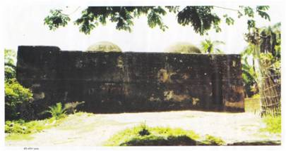

হাম্মামখানা/হাবসিখানা শ্যামনগর উপজেলার ইশ্বরীপুর ইউনিয়নে অবস্থিত। হাম্মামখানা/হাবসিখানা শ্যামনগর শহর হতে ৫ কি.মি দক্ষিণে বংশীপুর বাসস্ট্যান্ডের পূর্বপাশে অবস্থিত। এটি যশোরেশ্বারী মন্দির থেকে মাত্র ২০০ মিটার দুরে অবস্থিত।
বংশীপুর গ্রামে যশোরেশ্বরী মন্দির ও টেংগা মসজিদের মাঝখানে অবস্থিত হাম্মামখানা। এটি রাজা প্রতাপাদিত্যের রাজকীয় অতিথিশালার অংশবিশেষ। এর মধ্যে চৌবাচ্চা, পানি চলাচলের পথ, ছাদে গম্বুজ এবং গম্বুজে বড় বড় ছিদ্র রয়েছে, যা দিয়ে আলো-বাতাস প্রবেশ করে। পশ্চিম পাশে ছোট দুটি পথ ছাড়া আর কোন জানালা দরজা নেই ভবনটিতে। এর নির্মাণকাল ষোল শতকের শেষ দিক।
শ্যামনগর উপজেলা সদর থেকে এর দূরত্ব প্রায় ৪ কিলোমিটার। বংশীপুর বাসস্ট্যান্ডের পূর্বপাশে। সকল স্থানীয় যানবহনসহ মাইক্রোবাসযোগে এটি পরিদর্শন করা যায়।